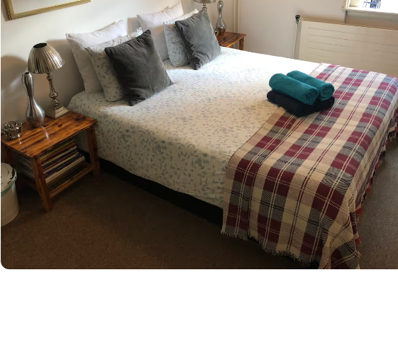
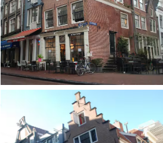
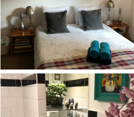
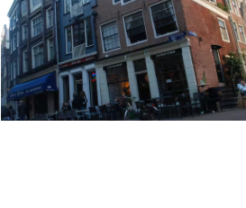
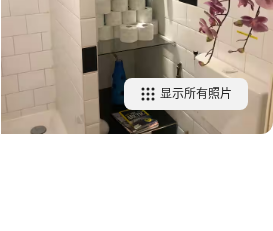

舒适的双人房
阿姆斯特丹市中心的基本卧室。
共享添加至心愿单





房间 ｜ 荷兰北荷兰阿姆斯特丹
1 张约 1.5 米宽双人床 · 共用卫生间
入住 Edwin 的房源
Edwin
超赞房东 · 16 年出租经验
了解Edwin的更多信息房源亮点
入住体验良好
近期客人对入住的顺畅体验感到满意。
街区充满活力
客人表示该区域适合步行，有很多地方值得探索，尤其是有不少餐馆。
出租单元里的房间
整栋住宅中的一个独立房间，以及共用区域。
房源介绍
部分信息已自动翻译。
我们位于阿姆斯特丹市中心的一栋古老房屋内，为希望享受家一般舒适住宿体验的游客提供两间客房（一间单人房和一间双人房），此外，房源位于历史悠久的市中心，靠近所有重要的博物馆、购物街、餐厅、酒吧和俱乐部。两间客房共用一间卫生间，可免费使用无线网络。
我们位于阿姆斯特丹最重要的夜生活区中心，这里充满活力，但也很吵。因此，请在预订时考虑这一点
显示更多睡眠空间
卧室
1 张约 1.5 米宽双人床
房源亮点与便利设施
卧室门锁无线网络吹风机冰箱
显示所有18项便利设施添加日期以查看价格
查看可订状态举报此房源
总体评分
5 星，88% 的评价4 星，11% 的评价3 星，1% 的评价2 星，0% 的评价1 星，0% 的评价
| 干净卫生 | 如实描述 | 入住便捷 | 沟通顺畅 | 地段优越 | 高性价比 | |
|---|---|---|---|---|---|---|
| 评分 | 4.8 | 4.9 | 4.9 | 4.9 | 4.9 | 4.8 |
地段
616
待客之道
582
共用空间
57
步行便利程度
161
洁净程度
220
卫生间
105
睡眠质量
92
噪音
106
周边
141
舒适性
123
评价的运作机制显示全部 815 条评价